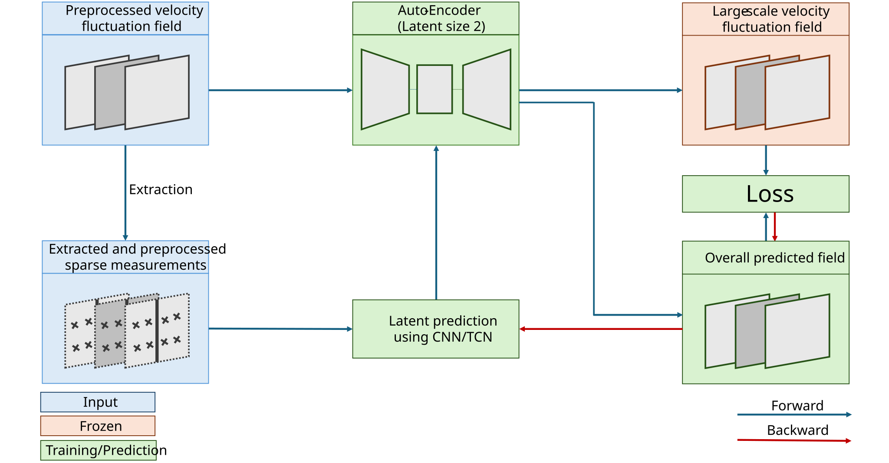

2026

Data-driven reconstruction of large scales in atmospheric boundary layer flow with sparse measurements
Du, H., Savory, E., Perret, L.
Experiments in Fluids
This study tests whether a few wind measurements can recover the larger patterns in a turbulent flow. Of the four methods compared, a neural-network model that uses information over time performs best overall and most accurately tracks the movement of these large-scale structures.
DOI: 10.1007/s00348-026-04330-y